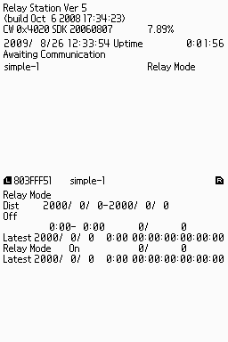
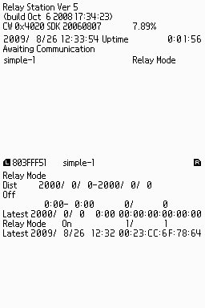
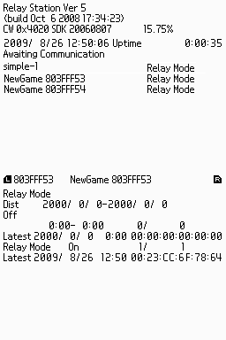

RelayStation
Overview
RelayStation is a program for relaying common chance encounter communications. It provides the same functionality as the Chance Encounter Relay Station that operates in Japan.
When implementing the chance-encounter communication features using the WXC library, you must take appropriate steps to ensure problems do not occur even when data is exchanged via a chance-encounter relay station. Use this program for verification purposes.
Startup Preparations and How to Use
- RelayStation uses backup memory, so you must prepare a flash card with 2-megabit flash onboard backup memory. Burn
RelayStation.srl to the flash card to run RelayStation on an actual DS system. To run the program on the debugger, insert the flash card into the debugger's Card slot.
- RelayStation saves its settings to the backup memory when it first launches, and then automatically saves every hour thereafter. Therefore, before you run RelayStation on an actual DS system or on a debugger, make sure the Time in its System Settings is set accurately.
- If there is no valid RelayStation data in the backup memory, the default settings file is loaded and RelayStation starts in the state shown below.

- You can use the following operations on this screen.
| Button | Operation |
|---|
| ↑↓ | Scroll the registered application list on the upper screen.
|
| L R | Cycle through detailed information of registered applications on the lower screen.
|
| START | Save state.
|
- You can reset the chance-encounter relay station to its initial state by holding down START＋SELECT＋L＋R while starting the program.
Description
- Initially, the relay station only registers the TWL-SDK WXC sample demo
simple-1.
The first time the relay station performs chance-encounter communication with simple-1, it sends simple-1 the data that was registered in RelayStation in advance. The data it receives from simple-1 is saved as the send data for the next encounter.

- When the relay station encounters an unregistered application, it automatically registers that application as New and handles it as a supported application thereafter. The first time the relay station performs chance-encounter communication with an automatically registered application, it sends data with a size of 0 bytes. The data it receives from the other party is saved as the send data for the next encounter.

Notes
- RelayStation does not support applications that implement unique chance-encounter communication features without using the WXC library.
- Actual chance-encounter relay stations not only act as relay stations for chance-encounter communication, but also have data distribution features that conform to designated data formats. However, RelayStation does not support those features.
- RelayStation is functionally equivalent to a real chance-encounter relay station, so it may unintentionally engage in chance-encounter communication with retail applications.
To avoid needless complications, minimize your use of RelayStation and shut down the program as soon as verification is finished.
- In North America, DS Download Station is the DS Trial Version distribution program. It provides the same features as a Chance Encounter Relay Station. Verify applications that support chance encounter communications in North America, therefore, with the DS Download Station test program.
Location
$TwlSDK/bin/ARM9-TS/Rom/RelayStation.srl
$TwlSDK/bin/ARM9-TS/Rom/DSDownloadStation.srl
See Also
Revision History
2009/12/10 Added a note about North American titles.
2009/07/15 Initial version.
CONFIDENTIAL